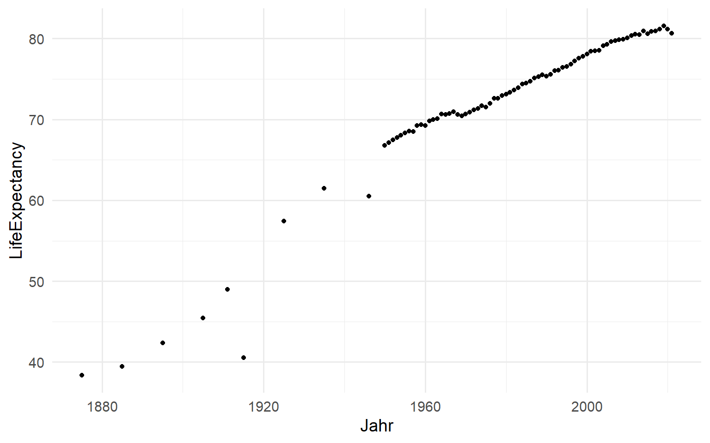
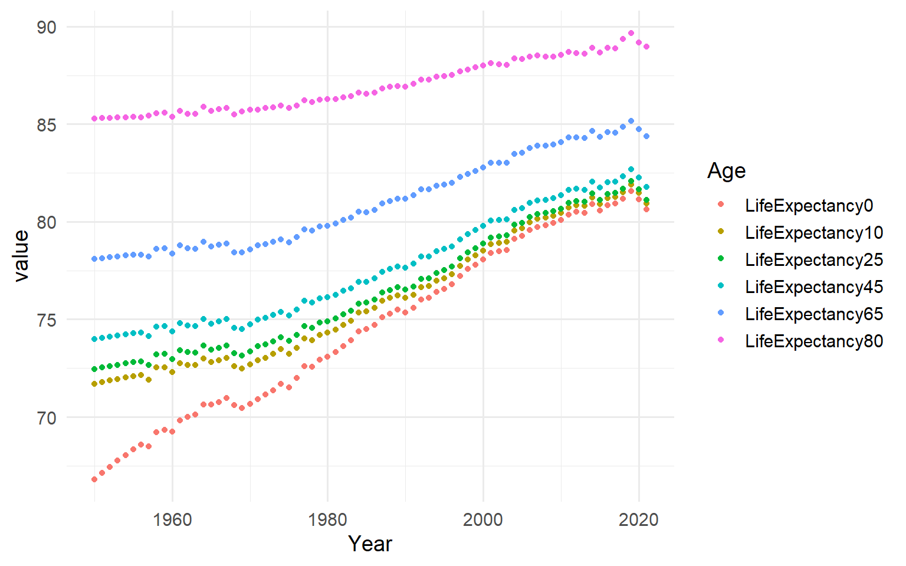
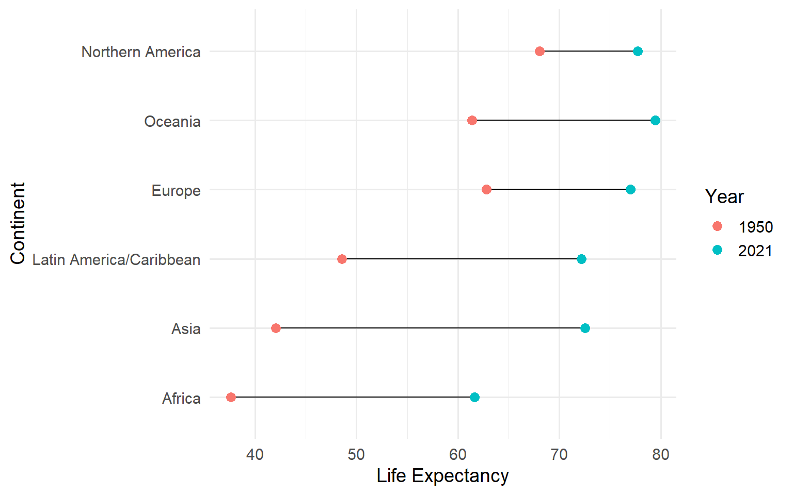

Lebenserwartung in Deutschland 2021
80.63
Differenz in Lebenserwartung Weiblich zu Männlich, 2021
5.14


Graphical display of life expectancy by continent 1950 - 2021
Change in life expectancy between 1950 and 2021

Table of life expectancy by continent 1950 - 2021